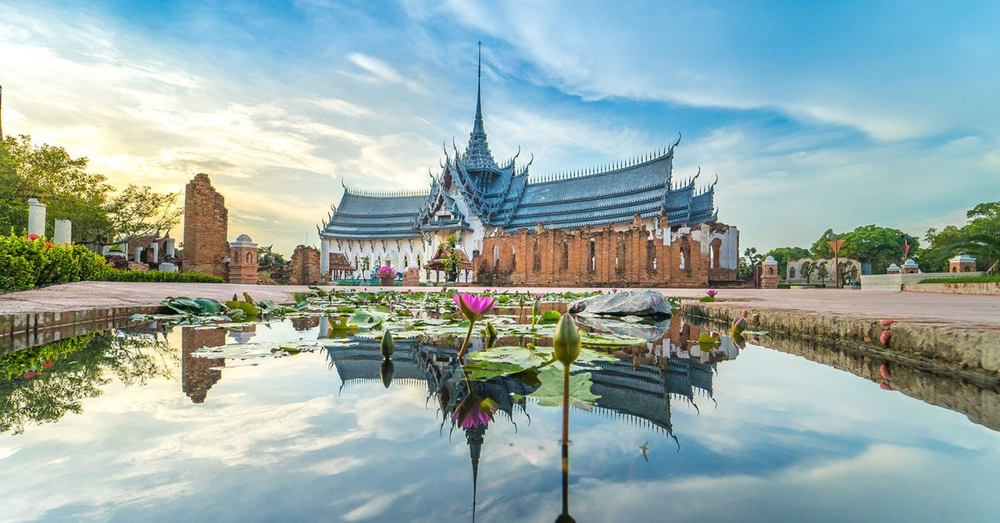

สํารวจประสบการณ์ท่องเที่ยวยอดนิยม

หอชมเมืองสมุทรปราการ
แลนด์มาร์คแห่งใหม่ วิว 360 องศาสามารถชมวิวเมืองสมุทรปราการ แม่น้ำเจ้าพระยา

พิพิธภัณฑ์ช้างเอราวัณ
พิพิธภัณฑ์ช้างเอราวัณ ได้รับการยกย่องว่าเป็นหนึ่งในสถานที่ท่องเที่ยวที่สำคัญและโดดเด่นที่สุดแห่งหนึ่งของจังหวัดสมุทรปราการ นอกจากประติมากรรมช้างเอราวัณแล้ว ภายในพิพิธภัณฑ์ยังมีศิลปวัตถุทางวัฒนธรรมและศาสนา งานประติมากรรม และงานศิลปะร่วมสมัยอีกมากมายให้ชมิ

เมืองโบราณ
เมืองโบราณ เป็นพิพิธภัณฑ์กลางแจ้งที่ใหญ่ที่สุดในโลก ตั้งอยู่บนพื้นที่กว่า 800 ไร่ เป็นแหล่งรวบรวมโบราณวัตถุ สถาปัตยกรรม และประติมากรรมไทยจากทั่วประเทศ ภายในเมืองโบราณ แบ่งออกเป็นโซนต่างๆตามภูมิภาคของไทย เช่น ภาคเหนือ ภาคอีสาน ภาคกลาง ภาคใต้ และภาคตะวันออก